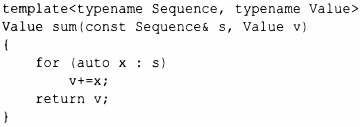
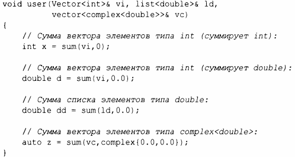

⇐6.3 Параметризованные операции 6.3.2 Функциональные объекты⇒
Мы можем написать функцию, которая вычисляет сумму значений элементов любой последовательности, которую может обойти цикл for для диапазона (например, контейнера) следующим образом:
Аргумент шаблона Val ue и аргумент функции v предназначены для того, чтобы вызывающая функция могла указать тип и начальное значение аккумулятора (переменной, в которой нужно накапливать сумму):
Цель суммирования значений типа int с аккумулятором типа douЫe может состоять в том, чтобы успешно справиться с числом, большим, чем наибольшее допустимое значение int. Обратите внимание, как из аргументов функции выводятся аргументы типов шаблона для sum<Sequence, Value>. К счастью, нам не нужно явно указывать эти типы.
Эта функция sum () представляет собой упрощенную версию алгоритма accumula te () стандартной библиотеки(§ 14.3).
Шаблон функции может быть функцией-членом, но не виртуальной функцией - компилятор не в состоянии знать все инстанцирования такого шаблона в программе, а потому не в состоянии корректно генерировать vtЫ в данной ситуации (§4.4).